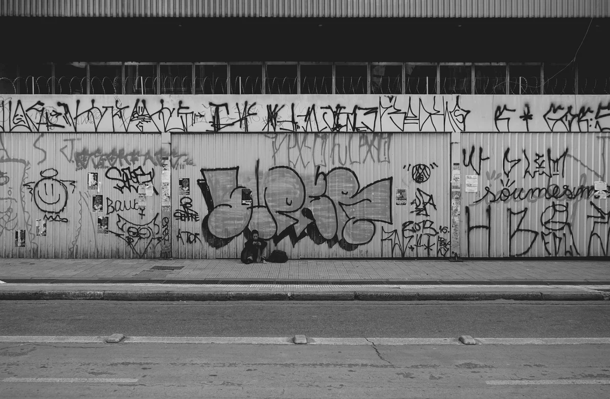
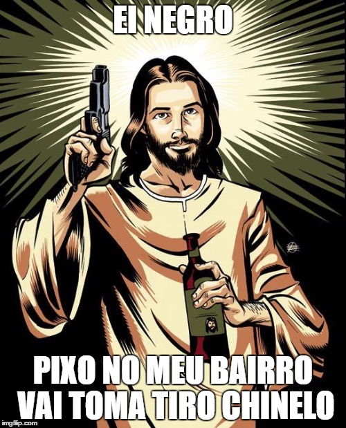
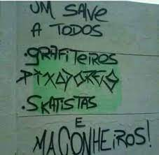

O pixo é um movimento com mais de 30 anos cuja história nos diz que os pioneiros são Juneca e Pessoinha, entre outros “fundões” da grande metrópole São Paulo dedicados a estudar a metrópole ainda nos anos 1980 – e a Mica, com a base dos estudos acadêmicos, pode dizer historicamente como era a cidade nesse período.
  